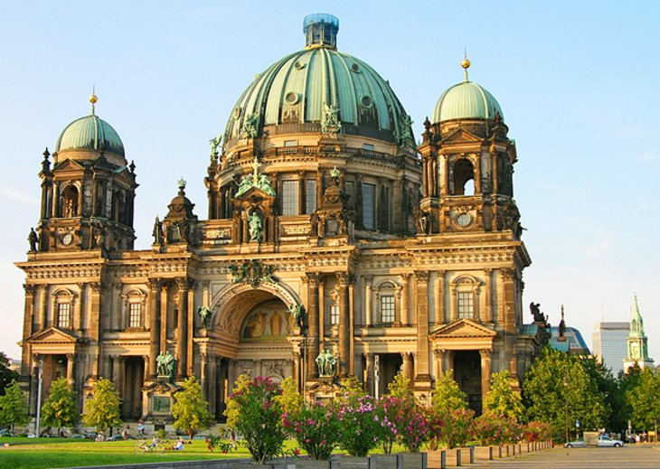
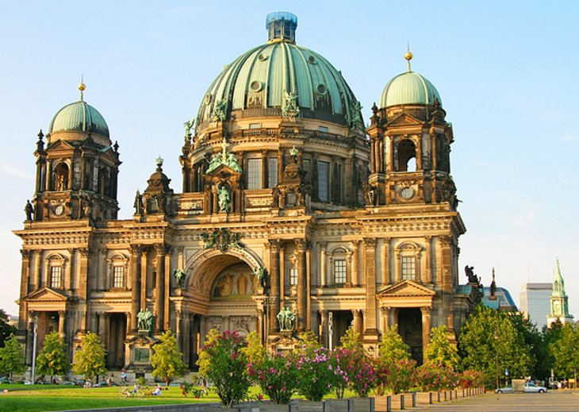

Localização
Berlim é a capital da Alemanha e uma das cidades mais vibrantes da Europa, conhecida por sua rica história, cultura diversificada e atmosfera cosmopolita.
A cidade ainda preserva monumentos importantes como o Muro de Berlim e o Portão de Brandemburgo. Além de sua relevância histórica, Berlim também é famosa por sua vida noturna, sua cena artística e seus museus renomados, tornando-se um destino turístico e cultural imperdível.
Para mais informações sobre esta incrível cidade, visite a página da Wikipédia.